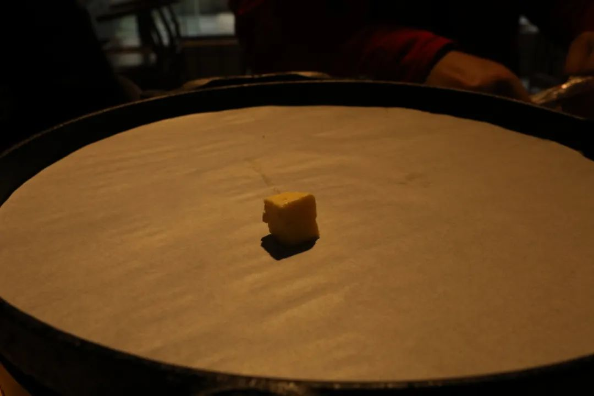
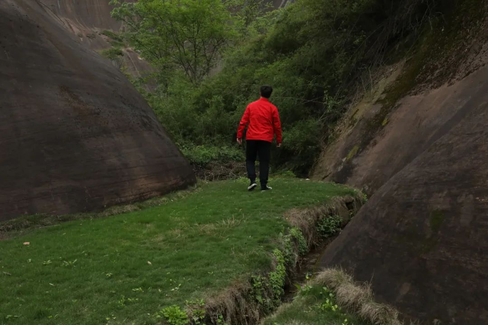
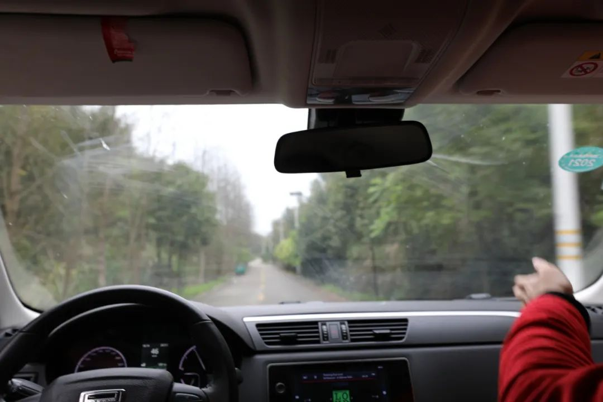
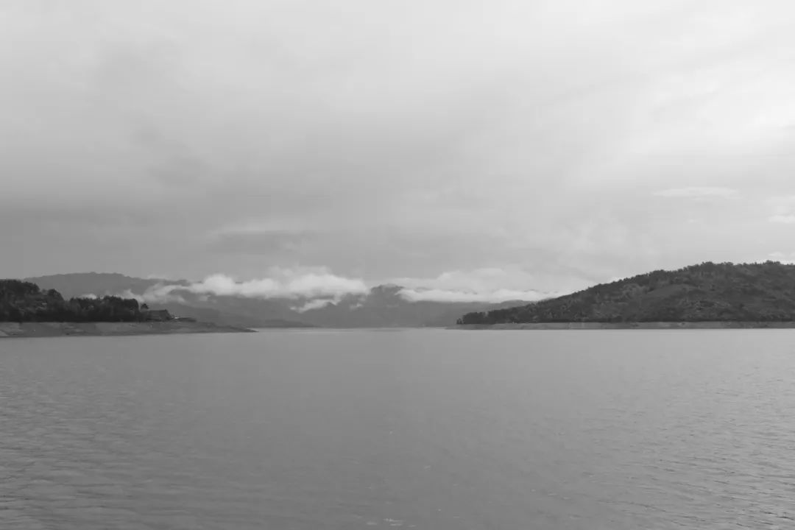
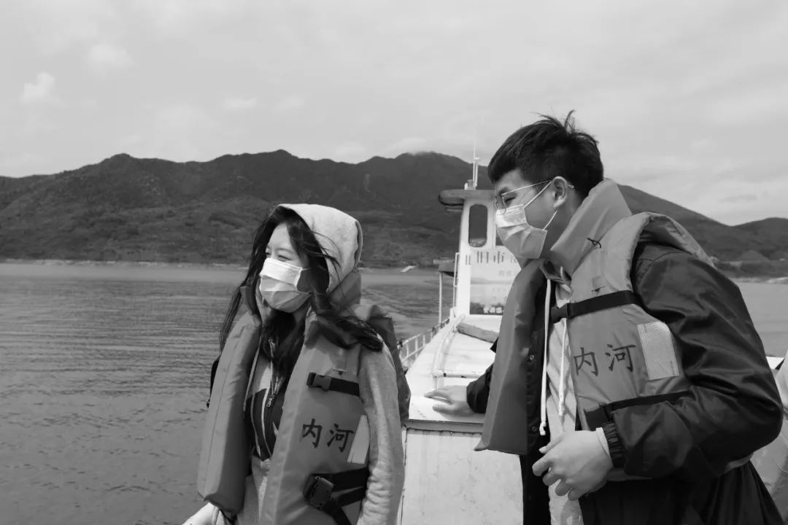
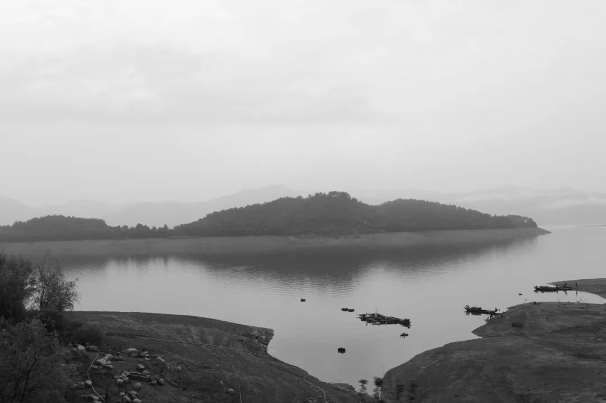
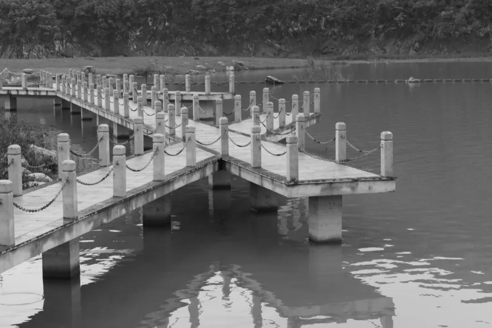
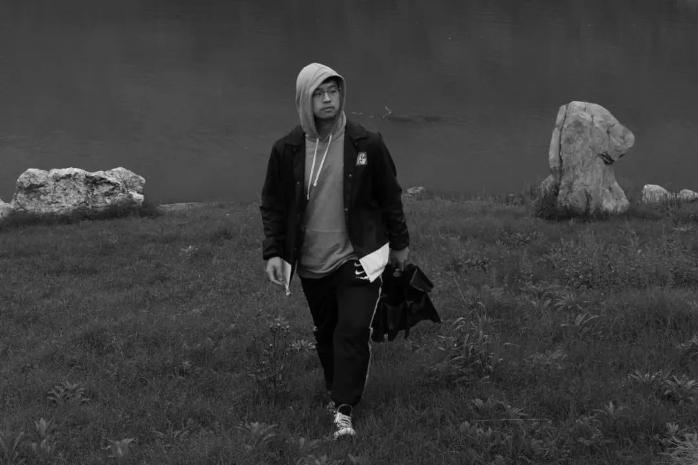
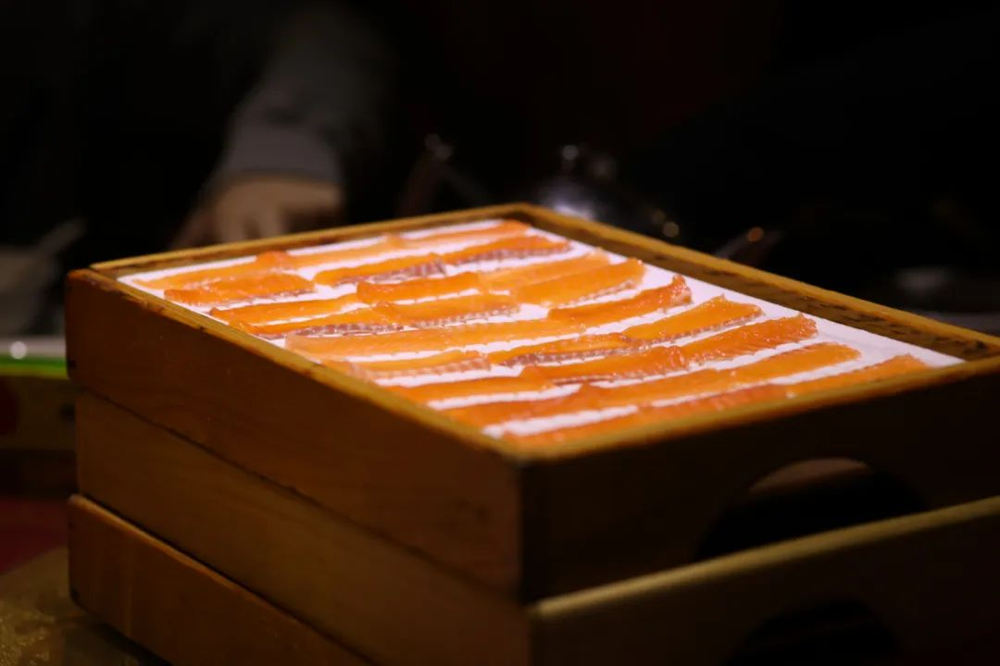

关于湘南的定义，广泛地说可以包含郴州、邵阳和永州的南部。按顺序来说，这次到的依次是郴州、资兴、邵东三个地方。最早一版的计划里，我有在找湖南和周边省份的还能开窗户的绿皮火车。查到的资料里显示，原本会被淘汰的这部分火车，现在多划定为扶贫专列，经停沿线的各类12306都查不到的小站。其中郴州就有一辆开往白石渡方向的免费列车，被美誉为“菜农专列”。可惜我拨过郴州站的服务电话后，说最近不会开这趟列车了而且时间也不确定，但也因此查到了很多周边中意的地方。而最引人注目的，便是这部分的建筑学文献：
"郴”字为篆书“林”与“邑”二字组合，意思为“林中之城”。旧时，设桂阳郡县于此。公开资料显示，三峡移民工程中的一部分，也就到了郴州站稳脚跟。文献中说郴州因为在南岭和罗霄山脉交接地，同时又沟通了珠江水系和长江水系，所以当地的文化氛围更加显得别致。
始发长沙站，人还不是很多。将两侧的出入口关闭了一侧，人们带着口罩准备过闸机。

毕竟一方面，我作为武汉的大学生每天都有在关注前线的消息也经受着舆论轰炸，另一方面我在长沙也往往选择绕开人头攒动的区域，所以到郴州北湖区之后扫街看到这样的场景，颇有些不适应了起来。

下午和Aus, Sunrise, Jerry一起，租了一辆车前往郴州市区北边苏仙区的飞天山。路过一处地貌奇特的地方，我们停下车来向山里走去。



离开市区。连上车载蓝牙，一首周杰伦一首陈奕迅。看到行道树向视野后方折叠、山峦一点点靠近。和老朋友一起唱歌聊天看风景，那就是旅游。是男人的快乐。


侧写郴州城在我则成了一件很简单的事情。虽然郴州人说方言的时候，我们四个从湘中湘北过来的湖南人都听不懂，但是无妨对人们面部的表情、走路的神态和城市容貌做出一点判断，即：这里的人们都在处理自己和周遭世界的过程中过得很充实、也过得很满足。
我到每个城市都会把自己当成残疾人，眼瞎、腿瘸、耳聋之类的残障人士来判断一个城市设计建设时对于城内居民的关怀程度。但这一标准并不那么必须要在郴州使用起来。一个城市要使用怎样的城居标准，既要和城市的发展水平相适应，又得考虑到当地人对生活的的展望。郴州那些量化的物质发展我不去谈，但单是我在扫街中看到和感受到的人们生活期许，就已经是内心充实满足的体现了。
去接native榕嬷嬷的路上，看到朝阳照在一栋楼上觉得很好看于是拍下了这张。第二天我们回来的时就发现这栋楼被拆掉了，洒水车正在对里边洒水处理扬尘。
终于知道了为什么在省外会说鱼粉是湖南特色。郴州这边是真的有一条去尾的鱼盖在粉上边。辣椒也很能打……这个真的是看起来不显形啊喂一吃就知道是真的湖南辣把人吃哭
出发前往小东江、大东江/东江湖景区。路遇一座很神奇的高压电塔，以及拍到了相机的第一万张（也许会找时间再来说说这个一万）


东江湖水上很多很多的岛。原住的居民们也就乘坐郴州港的船只来来去去。大小的码头不少，班船船老大也只是有人在哪联系了时间地点，才会规划航线去那里接人
桃花岛的民宿老板开着内燃机车来接我们。午餐的一道菜是藠头和霉豆腐
下午拉上窗帘睡了一觉，同学在外边说话的声音慢慢把我从睡梦中拉醒来。那感觉就像是高中的时候某一节课下课我埋在臂弯里睡着了，醒来可以骂骂咧咧同桌，说你怎么我在这睡觉你还这么喋喋不休
虽然天气预报说云雾很多，但晚上我们依然在底下的坪里看到了漫天的繁星。
区分哪里是猎户座、哪里是参宿井宿北斗星，说说笑笑想起高中时候一些对天文现象和科技小发现很执着的朋友。人生中有多少次这样的时候呢，可能四五次可能五六次，而人们还以为自己随时可以有这样的机会和老朋友一起出门在满载一船星辉的时候大声放歌。
横屏是我在调角度时候，正好拍到的Jerry四五分钟内，时而沉思时而仰头的模样




下午转到坳上古村。这是我此行很心水的一个地方了。时光印记就刻录在封火墙的层叠檐角当中

建筑艺术虽然也和视觉艺术可以搭上，但是毕竟不像已经靠自己积累了很多的人文心理和社会生态侧写那样熟练。我所知道的那些描绘一处建筑的语言，以及分析这些建筑设计背后的人居心理也都还只是从文献当中来的现炒现卖。建筑师的设计理念，居住人对此的接纳以及在人们心目中形成的想法，我以为我目前的笔力还不足以把我所感受到的精确而完整地表达出。
到了此行需要去的宗祠。宗祠还很新，四年前才重建。各种设计都到了位，时间的痕迹还比较少
进去之后看到香炉，想起我大概十来年前也到过这里。一旁的封火墙和戏台的设计上就能看出很明显的传统设计样式和时间印记。查了一下贺金声是正好生活在废除科举时候的秀才，光绪二十八年也就是1902年被枭首，身后誉为抗击洋人的民族英雄。衡州教案后，他作为民间领袖拉起了一支队伍，失败后受乡里尊敬而修建祠堂。正好我不知道，也在这里科普一下当地政府网人物评述吧（纪念馆内写得不怎么详细）可是在小农经济和传统文化被外国经济和文化势力冲得七零八落的20世纪初期，大多数如贺金声这样不得志的读书人，人生的道路越来越窄。如果贺金声早生20年，恰逢洪杨起事，楚勇湘军趁势而起，一大帮湖南的落第秀才跟着曾、左、罗、江等人外出打仗，贺金声没准在战场上建立功勋，像同乡刘坤一、魏光焘那样位至总督也未可知。如果他晚生20余年，在自己的少年时代科举废除，绝了这条仕进的道路，他有可能像黄兴、蔡锷、陈天华这些晚辈老乡那样，东渡日本接受现代教育，也有可能成为辛亥革命的重要人物，建立一番功业。而他恰好夹在这两代人中间，两头不靠。他成长的时期，正是平定洪杨以后，清廷迎来了一段短暂的“同光中兴”的回光返照，贺金声这种最后一拨接受传统教育的乡村俊杰，注定会成为时代的牺牲品。我在查文献的时候，有找到很多谈儒道在湘南地区影响着祠堂和建筑设计理念的范式。需要的话我可以想个什么办法把我找的文献发过来。因为还不是很熟稔，所以也只能从视觉上做个小札
这次游记的写作相比以前的很多，平静很多也更加偏向于研究风格（主要还是建筑的原因）尬走当中除却人文之外，也有一段时间不见的老朋友重又聚在一起时候的久违感。对旅行这件，感受起来很容易走到不同风格倾向中的事情而言，出门就已经开始进入状态了
看看以前的文章就发现，其实旅行的理念有一直在变化吧和每个时候的人、stage、心情、天气 都有关